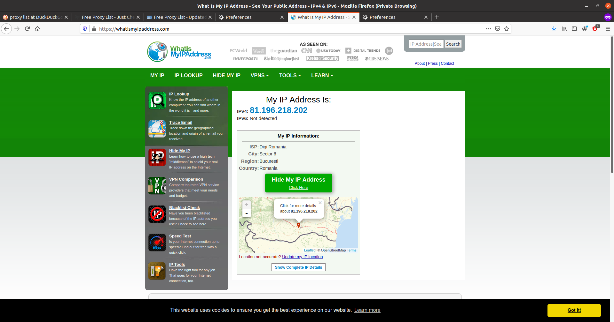
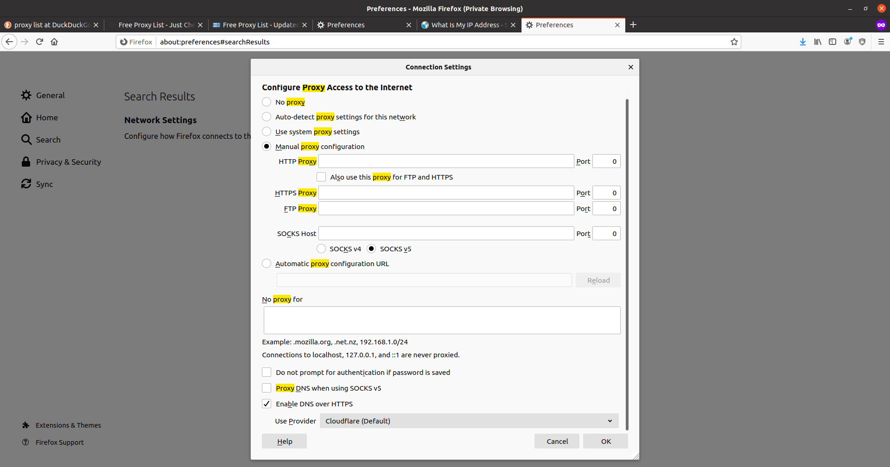
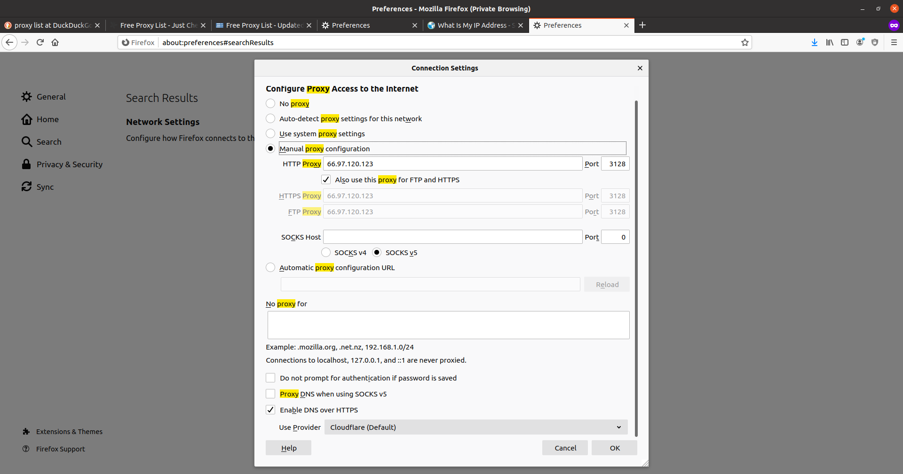
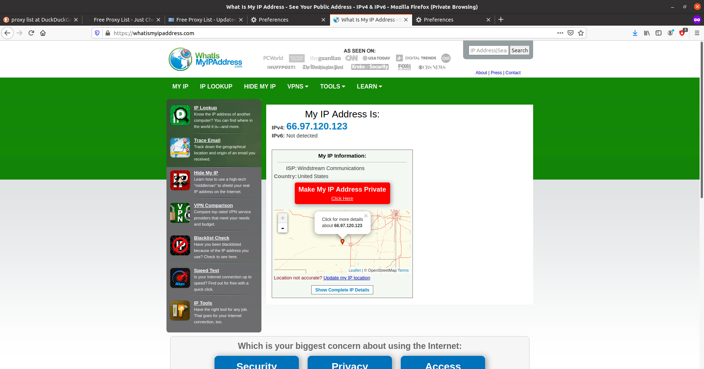
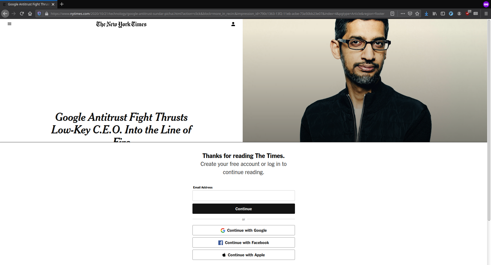
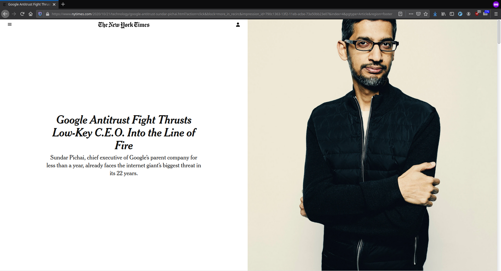

4. Funcţionalităţi suplimentare de reţelistică¶
Aceste exerciții și tutoriale sunt menite să abordeze lucruri care nu sunt neapărat necesare pentru utilizarea și înțelegerea conceptelor din acest capitol, dar oferă bune practici și cunoștințe extra despre conectarea calculatorului la Internet și funcționarea serviciilor în Internet.
4.1. Folosirea proxy-urilor HTTP¶
Din unele motive, anumite site-uri nu permit accesul utilizatorilor din unele țări la ele. Acest lucru se întâmplă din motive logistice, legislative (cu precădere la politicile de colectare a datelor interzise în anumite țări) sau securitate. Presupunem că ne aflăm într-o astfel de situație, în care nu ne putem conecta la un site din locul / rețeaua în care ne aflăm. Sau vrem să ascundem poziția noastră. Putem identifica din ce țară apare calculatorul nostru folosind site-ul WhatsMyIP în felul următor:
Până acum am explorat cum putem să apărem în Internet ca o stație care provine dintr-o altă adresă folosind un VPN.
Proxy-ul HTTP este o alternativă a VPN care în loc să tuneleze tot traficul în Internet, o va face doar pentru traficul HTTP. Putem să folosim un serviciu online de proxy-ing.
Proxy-ul se bazează pe faptul că există un sistem undeva care va primi mesajele noastre și le va trimite mai departe. Există servere proxy libere în Internet care oferă serviciul de proxy-ing gratis. Putem să obținem o listă cu astfel de servere gratis. Putem obține o listă cu astfel de servere de aici.
Pentru a folosi aceste servere în siguranță, fără ca acestea să poată vedea traficul nostru, trebuie să identificăm servere care folosesc protocolul HTTPS.
Odată selectat un server, trebuie să îl configurăm în browser. Pentru aceasta
accesăm meniul de preferințe Preferences, apoi căutăm
după cuvântul cheie proxy în setările browserului:
În imaginea de mai jos se găsește configurația implicită:
Odată ajunși la setările pentru proxy, vom selecta setarea manuală a proxy-urilor și vom introduce adresa proxy-ului selectat împreună cu portul acestuia.
Atenție!
Selectăm opțiunea Also use this proxy fot FTP and HTTPS pentru a
folosi proxy-ul pentru tot traficul.
Folosind site-ul WhatsMyIP vedem că adresa noastră nu mai apare ca cea inițială ci apare ca fiind dintr-o altă țară.
4.2. Evitarea paywall-urilor pe site-uri web¶
Exista anumite site-uri, cum ar fi cele de știri, sau articole științifice care ne limitează accesul la un număr de articole pe zi. Funcționalitatea de blocare a conținutului de pe un site până la plata unei sume se numește un paywall. Paywall-urile sunt foarte agasante atunci când încercăm să găsim mai multe surse pentru știri, sau când vrem să parcurgem mai multe articole de pe același site.
Paywall-urile se reduc la elemente HTML care pot fi șterse din pagină pentru a afișa conținutul complet al unui articol. Elementele web pot fi șterse manual, sau automat, folosind un add-on de browser.
Pentru ștergerea automată a blocajelor putem folosi acest add-on de browser care funcționează atât pe Google Chrome cât și pe Mozilla Firefox, care poate fi descărcat și instalat în browser de aici.
Observăm cum după instalarea și activarea add-onului putem vedea conținutul paginii web nerestricționat.
4.3. Configurarea avansată pentru SSH¶
4.3.1. Configurarea scurtăturilor SSH¶
Note
Pentru rularea acestui demo rulați în directorul
~/uso.git/labs/03-user/lab-containers/ comanda ./lab_prepare.sh install ssh.
Pentru a ne conecta la infrastructura pentru această secțiune vom folosi
comanda ./lab_prepare.sh connect ssh
Aplicația SSH permite configurarea scurtăturilor pentru destinații la care vrem să ne conectăm prin SSH.
Pentru a ne conecta în mod normal la stația 10.10.10.3, ca utilizatorul
root folosind opțiunea -X, ar fi nevoie să rulăm comanda:
student@uso:~$ ssh -X root@10.10.10.3
Introducerea acestei comenzi pentru fiecare conexiune succesivă este ineficientă și există alternative pentru a reduce timpul de scriere al comenzii.
Vom configura o scurtătura pentru utilitarul ssh folosit de utilizatorul
student. Fișierul de configurare se regăsește la calea ~/.ssh/config.
Pentru adăugarea unei scurtături vrem să scriem în fișier o intrare de felul
următor:
student@uso:~$ cat ~/.ssh/config
Host remote
HostName 10.10.10.4
User root
ForwardX11 yes
Folosindu-ne de intrarea de mai sus, putem să ne conectăm la stația menționată folosind comanda următoare:
student@uso:~$ ssh remote
Welcome to Ubuntu 18.04.5 LTS (GNU/Linux 5.4.0-51-generic x86_64)
* Documentation: https://help.ubuntu.com
* Management: https://landscape.canonical.com
* Support: https://ubuntu.com/advantage
This system has been minimized by removing packages and content that are
not required on a system that users do not log into.
To restore this content, you can run the 'unminimize' command.
root@ssh:~#
4.3.1.1. Exercițiu - Configurarea scurtăturilor SSH¶
Realizați configurările necesare astfel încât să va puteți conecta la stația
10.10.10.3 ca utilizatorul student, folosind opțiunea de X forwarding cu
scurtătura remote-stud.
4.3.2. Configurarea accesului prin chei SSH¶
După cum am observat în secțiunea <TODO>, ca să propagăm cheia publică pe o stație este necesar să cunoaștem parola utilizatorului drept care vrem să ne autentificăm.
Însă există situații în care nu cunoaștem parola utilizatorului, dar avem acces fizic sau printr-un protocol de comunicare la stație.
În această situație, putem să configurăm cheia publică folosindu-ne de fișierele de configurare ale serverului SSH.
Pentru autentificarea utilizatorilor folosind chei publice-private, serverul SSH
verifică fișierul ~/.ssh/authorized_keys. Acest fișier conține o listă a
tuturor cheilor publice care au voie să se conecteze la server.
student@uso:~$ ssh root@10.10.10.3 cat .ssh/authorized_keys
ssh-rsa AAAAB3NzaC1yc2EAAAADAQABAAABgQDdLi3SmYI1EvpacxU9qapNwqR2p2OX2GyUXPJsyJcF73kpCqT2qjoeAgHUR6fJkCotCpsusF4AXfK+GCCnLbTuVDZxnTZo85izUaRMQNbvylo+e9fj7+IRvtID6wLMSk4RdLJRFgwwej5WFAS4egdeuGPvrcvT123oZNE/lvW2V/LN9U61SUo0d+X5a8m0XL4pPLfG2/hzuSIlSjUo8iktU7mqfQelCKCeNlxxS1w65buut+dSRtH2WDzCWM/7C78f6aa6swML0zQwfHVRdMyVP2llMbgXaaGR+YJIqm091nKGze9pFFIT68lBrMKTuplhZVvrqP5292hwU376hhdaloHaph3iTtGk5cshCOpDmZPyj5BvSsdhk9hVvgsvPohK4sRoxpCxv/Xm0gLHGBiP39ZUOuGTSCrSO7IvLxgq7k6JZrMtGVoiHJUFur6tFJ0aZ020Ror6czw3CUBXyHk05bQMziuMKJGn/jjHpWUfZ4y1n16E8Gael1+7melI/v0= student@uso
Pentru adăugarea unei alte chei SSH pentru verificarea identității clienților,
este suficient să scriem cheia SSH a utilizatorului pe o linie nouă a fișierului
authorized_keys.
TODO infra
4.4. Gestiunea avansată a conexiunilor la rețea¶
Pentru a ușura configurarea conexiunii la Internet pentru utilizatorii Linux, a
fost adoptat ca serviciu standard pentru gestionarea conexiunilor la Internet:
serviciul NetworkManager. Acesta permite utilizatorilor să configureze din
mediul grafic parametrii de funcționare a rețelei, cum ar fi serviciul DNS
folosit.
NetworkManager oferă și funcționalități în linie de comandă, cu scopul de a
face mai ușoară depanarea problemelor de rețea. Utilitarul pe care îl vom
folosi se numește nmcli, iar acesta ne oferă funcționalități pentru
gestionarea configurărilor.
Din punctul de vedere al serviciului NetworkManager, există interfețe pe care
acesta le configurează și există conexiuni, care rețin configurările.
4.4.1. Configurarea conexiunilor folosind nmcli¶
Pentru interfețe conectate prin cablu există doar o singură conexiune în mod normal.
Pentru a vizualiza parametrii de funcționare ai unei conexiuni rulăm comanda:
student@uso:~$ nmcli connection show "Wired connection 1" | less
connection.id: Wired connection 1
connection.uuid: eb564cd4-e37e-3d00-a94a-6596698ef4e3
connection.stable-id: --
connection.type: 802-3-ethernet
connection.interface-name: enp0s3
<...>
Observăm că sunt afișate lucruri cum ar fi ruta implicită, adresa IP configurată pe interfață, serverul de DNS folosit, și modul prin care a fost configurată interfața (prin DHCP sau în mod static).
Pentru modificarea unui atribut al conexiunii folosim comanda nmcli în felul
următor:
student@uso:~$ nmcli connection modify "Wired connection 1" ignore-auto-dns yes
student@uso:~$ nmcli connection modify "Wired connection 1" ipv4.dns 1.1.1.1
student@uso:~$ sudo systemctl restart network-manager.service
Pentru a folosi un sever DNS dorit de noi, în loc de cel primit prin DHCP este
nevoie să setăm parametrul ignore-audo-dns la valoarea yes. Atributul
ipv4.dns reține date despre serverul DNS care va fi folosit în cadrul
conexiunii. Pentru a schimba serverul DNS folosit am setat acest parametru la
adresa IP 1.1.1.1.
4.4.1.1. Exercițiu - Setarea serverului DNS permanent folosind nmcli¶
Faceți modificările necesare folosind comanda nmcli astfel încât conexiunea
Wired Connection 1 să folosească serverul DNS 8.8.8.8.